Abstract
Gamification is the use of game-design techniques, game thinking and game mechanics in order to improve non-game contexts. Gamification is usually applied in non-game applications and processes, with the aim of encouraging people to adopt them or of influencing the way they are used. Using gamification principles in teaching raises motivation, develops creativity and makes learning more enjoyable. In the Playground project, the six principles of gamification were made accessible through a course embedded in an online learning environment – Classcraft. Six middle-school teachers from the Krayot area took an active part in the course. During the course, the participants were exposed to the principles of gamification, developed ICT-based learning units, experimented with games, wrote reflections and gave feedback.
The research process posed four research questions, which were examined through interviews, observations and reflections. It was found that prior experience with digital games contributed to success in the course; that the content learned in the course will help the participants in their teaching; that the course changed the participants' perception regarding the integration of gamification in teaching; and that the participants perceived that students enjoyed lessons that incorporated gamification principles more.
1 Introduction (collaborative work)
The COVID-19 pandemic presented us with many challenges, among them social distancing and a ban on gatherings. Many fields were harmed by this: tourism, the restaurant industry, culture, businesses and, of course, the education system. On 13 March 2020, the Prime Minister of Israel, Benjamin Netanyahu, decided to close the education system almost immediately and to move learning online. The board and the classroom were replaced by computer screens, and school was replaced by Zoom.
Various methods and ways of consuming content and learning found themselves being integrated into the education system – some more easily than others. One of these methods is gamification. This method makes use of game components, for example points, badges, leaderboards and various game mechanics. Park and Kim (Park & Kim, 2021) found that using gamification principles improves the learner's motivation as well as their approach to learning. They further found that Google searches for the word "gamification" rose significantly compared with similar searches such as "game-based learning" and "educational game".
The project team includes four members: Aviram Weisberg, Guy Kaufman, Maor Cohen and Nissan Daniels. Maor and Nissan are teachers who experienced first-hand how most teachers struggled with the transition to online teaching, and how, despite the opportunity to move forward to a new form of learning, they chose to keep teaching as they were used to. Guy is a former geography teacher who did not feel he had received the tools and skills for teaching and learning, until he eventually decided to leave the formal education system. Aviram, a learning and user-experience designer, experienced the changes brought about by COVID-19 through the eyes of the training units within an organization – how lecturers and employees experienced difficulties quite similar to those of teacher and student.
From the very beginning it was clear to us that the project would focus on the teacher population. Most teachers, in light of what Nissan and Maor experienced, were accustomed to teaching in a particular way – the teaching methods they had been trained in, a more traditional form of teaching. When put to the test of reality and forced to reinvent themselves, they experienced difficulties. As part of the project, we developed a semi-online facilitated course that teaches teachers the central and basic principles of gamification, so that they can integrate them in both face-to-face and online teaching. To allow teachers to understand and internalize the principles better, the course was built on the very principles it teaches. Exposing the participants to the central principles of gamification and integrating them in teaching may help increase students' motivation to learn. But no less important, it allows teachers to make teaching special and interesting, and brings it closer to the world of their students, who are surrounded by gamified elements in their everyday routine.
The course was implemented at a middle school in Kiryat Motzkin, the school where Maor works. Six teachers who teach the same grade level as Maor took part in the course. All course meetings were conducted in a facilitated, face-to-face manner (mainly because of the size of the group and the need for support during implementation). The meetings were facilitated by Maor and Nissan. All other parts of the work – from ideation and development, through the literature review, building the content, the products and the course website, to building the presentations and support materials – we carried out together, as a team.
2 Theoretical background (joint writing)
In a special report of the State Comptroller for the year 2021 (5781) on the State of Israel's handling of the COVID-19 crisis, the State Comptroller presented a large number of gaps and failures in the education system. One of the failures presented in the report is the level of teachers' training for remote teaching. According to the report, the period preceding the pandemic "constituted a barrier to their readiness for this type of teaching. The second teachers' survey of the National Authority for Measurement and Evaluation in Education, conducted in February–March 2021, shows that even in February 2021, 20%–25% of teachers felt that they had the tools and abilities required for remote teaching to a moderate extent or less, and 32% of teachers stated that the professional development in which they participated during the COVID-19 period contributed to their acquisition of the required knowledge and skills to a moderate extent or less" (Office of the State Comptroller, Division for Audit of Social and Welfare Fields, 2021, p. 5). This report repeatedly presents a central gap in the education system's handling of remote teaching – the training of teachers to use alternative teaching tools.
Throughout the COVID-19 period, the Ministry of Education worked through several channels to make technologies, media, content channels, training tools and guides accessible to teachers. From the testimony of teachers in the field, it is clear that band-aid solutions do not hold up in the long term. A veteran teacher in the education system has not undergone training for online learning; even teachers coming from areas where the "Teaching in Emergencies" program was implemented (a program for moving to online learning during a military emergency) do not have the tools to deliver the full curriculum online.
2.1 Teacher training
"The most constant factor in our lives is change. The transformations of the 21st century are characterized by professional and personal mobility, by lifelong learning, and by the need for computerized and networked technological proficiency, also within school settings" (Dorfberger & Carmi, 2017, p. 170). In their article, the researchers concluded that the challenges of the education system lie not only in recruitment gaps and the shortage of teachers, but also in the generational gap between younger and older teachers, mainly in terms of technology use. Over the years, schools and the education system have been one step behind technological progress. Implementing technologies in the classroom, making them accessible, and harnessing them for the learning process are not commonplace in the daily life of a teacher in the Israeli education system. We have witnessed dedicated attempts in individual schools and slow processes in the education system, but the COVID-19 pandemic that burst into our lives changed the pace of progress.
Many researchers believe that engaging and educating teachers to integrate technologies in the learning process and in the classroom should already take place at the stage of their training, providing them with a foundation at both the technological and the strategic level of integration (Roth, 2014). The issue of teachers' professional development occupies many researchers; Becker and Ravitz argue that it is important for teachers to participate in technological professional-development courses, because these influence the thoughtful integration of ICT tools in learning and teaching processes (Becker & Ravitz, 1999).
2.2 Play, gamification and teaching
In the past there was a clear and defined distinction between formal learning – the learning we now call the traditional approach – and learning through amusement and play. Formal learning was associated with school hours, while the other was defined as leisure or a break. Over the years, as technology entered the school space, various pedagogical approaches emerged that combine enjoyment and learning. Accelerated technological progress and the growth and strengthening of social networks – all of these led to the creation of new pedagogies. Thus a new term entered the game: "gamification" (Gamification) (Ziv & Gilutz, 2019).
2.2.1 Gamification
Gamification is not a game; gamification is a collection of defined characteristics from gaming culture (Gaming). Gamification is the very introduction of components and design elements from gaming culture into an environment that is not a game – a classroom, for example. In his book, Kapp (Kapp, 2012) defines gamification as "using game-based mechanics and game thinking to promote learning and to help solve problems" (p. 10). With the development of computer games, the research community tried to identify specific characteristics that make computer games so beloved, and to try to apply them in other fields. Yu-kai Chou, a world expert in gamification and the author of the book Actionable Gamification, defines gamification as the craft of deriving all the fun and addictive elements found in games and applying them to the real world (Chou, 2019). In her book, Faust (Faust, 2021) presents the definition by Deterding et al. from 2011, according to which gamification is the use of game elements in non-game contexts. She also presents the definition by Werbach and Hunter from 2012, who argue that gamification is the ability to embed game features in non-game activities. In addition, the author (ibid.) presents the definition by Robson et al. from 2014, according to which gamification is the application of lessons from the gaming domain in order to change behaviors and outcomes in non-game situations.
Ziv and Gilutz (2019) argue that gamification has become common in many fields thanks to the following characteristics. First, gamification can be integrated in many fields: because gamification offers various ways of implementation, it can be found in education, in programming and even in the labor market. Another reason is that gamification is goal-oriented and allows the target audience using it to act toward achieving goals and objectives. In addition, gamification is rewarding and based on self-motivation, which increases enjoyment and motivation. Furthermore, gamification is focused on the target audience and is built or designed especially for it. Finally, gamification is accessible and designed on the basis of existing and available technologies. Matza and Assaf (2020) argue that the rationale for using gamification rests on behavioral and social psychological theories and on motivation through positive reinforcement.
2.2.2 The principles of gamification
The design elements are the magical components that Chou defines as the fun and addictive elements. Nicholson (2014) distinguishes between these elements. He notes that there is a difference between reward-based gamification (Reward-Based Gamification) and meaningful gamification (Meaningful Gamification). In his article, Nicholson presents six principles for creating meaningful gamification:
- Play – Play is the activity people engage in within a defined space. Play provides opportunities for development and imparts skills for application. A game has constraints, "the rules of the game", that give the player a framework. Sometimes this framework can be broken or bent. The rules and goals of the game are agreed upon by the players in advance; any change must be agreed upon by everyone. It is the play itself, and not the points or prizes, that gives players the opportunity to engage with real-world domains through playfulness. Play gives the player the freedom to explore, experiment, succeed and fail within its boundaries.
- Exposition – Exposition is a principle that puts the story (the narrative) at center stage in gamified learning. There are two important parts to exposition: developing a meaningful narrative element, and presenting it to the participants. Story is an important pattern for recognition, understanding and explanation, and it is therefore almost the most important element in gamification. Integrating a story provides a clear advantage in that it allows the player to see the connection between different points in time, which can help them make informed decisions. A good story is one that places the player at its center and leads them to make meaningful choices in the game.
- Choice – In gamification, choice allows the participant to control the way they interact with the system. When designing an environment, the player should have meaningful choices to make within the system – a number of tasks they can perform, their way of working (alone or in a group), and even the order in which tasks are performed. It should be noted that many options can confuse participants, and they should therefore be provided with scaffolding when designing the environment.
- Information – This principle provides the participant with the importance of the "why" and the "how" behind the game, and not just "what are we doing?" and "how many points is it worth?". This element is important because it supports the humanistic approach, which provides the participant with the information they need and with its impact on the real environment. It is important to provide the information in different ways, so that the participant can learn in the way that best suits them. Another point to emphasize is to give the participant information that is as relevant as possible.
- Engagement – This principle has two main characteristics. The first is social engagement. Participants will have a more positive experience when they feel connected to the world around them. Creating connections between participants can be expressed through forming shared groups that face various challenges together. The second is creating an interesting game experience for the participants. This principle is in fact the experience of flow (Flow) in the game: as the player's skill increases, so does the level of challenge in the game. Care must be taken that the tasks are not too easy, which may cause boredom for the participant, nor too difficult, which may cause frustration.
- Reflection – The idea of reflection is to create opportunities for players to look back and think about their game-based experiences. This opportunity creates a situation in which the learner can connect what happened in the game to their everyday life. The learner then reflects on this experience, creating connections between the experience and other aspects of their life. After observing the experience, the learner generalizes aspects of the experience to form abstract concepts. Finally, the learner applies these abstract concepts to a new setting, which starts the cycle anew.
2.2.3 Gamification in education and teaching
Huang and Soman (Huang & Soman, 2013) argue that although integrating gamification in teaching seems simple and effective, there are five steps required for integrating gamification in teaching to occur in the most effective way. In the first step, the teacher must understand who their target audience is and the audience's effect on carrying out the program. The target audience can be analyzed by age, academic abilities and mastery of various skills. Adapting to the target audience can be complex, ranging from motivation to the time of day at which the gamification takes place. The second step is defining the learning goals. At this stage, the teacher must explicitly define the learning goal for the student. The learning goal can be completing an assignment, taking a test, presenting a project or increasing engagement in the lesson. The third step is in fact breaking down the goal from the previous step into milestones and stages. Breaking down the goal will help students maintain motivation and help the teacher ensure that students are heading in the right direction. The fourth step is identifying the gamification resources that can contribute to the program's success and planning the integration of the gamified elements. For example, the teacher needs to ask themselves how many points to award for completing a milestone, how many points are required to move to the next stage, what rules apply in the program, and whether to give feedback during the program. The fifth and final step is integrating the gamification.
Ziv and Gilutz (2019) present challenges in education and how gamification can help with these challenges. For example, in the cognitive-emotional challenge, in which students' boredom causes disengagement from the material being learned, gamification can generate interest and enjoyment from the learning process. Because gamification is designed so that the user experience is what matters most, it can help with the cognitive challenge of distractions and difficulty concentrating. Introducing gamification components allows the learner to cope better with social-emotional challenges in which students must deal with lack of success or failure. Gamification also helps address another educational challenge: it enables alternative assessment, in which it is easier for the teacher to track students' progress.
Istance and Paniagua (Istance & Paniagua, 2018) present four pedagogical systems in which gamification can be embedded more effectively. Learning through storytelling, in which the narrative gives the student a purpose and an identity; in this way learning holds learners' attention over time and encourages them to think. Another system is assessment of learning, in which learners interact and are required to respond to their progress; this keeps the learner focused and not bored. The third system mentioned is problem solving, in which gamification allows learners to deal with complex problems through inquiry and collaboration. This system connects to the last one, learning through experience, which allows learners to learn through trial and error without the consequences being too severe.
2.3 Motivation
The concept of motivation refers to the willingness to invest time and effort in a particular activity, even when it involves difficulties, high costs and failures. According to this definition, motivation is an internal mental entity, and its intensity can be assessed in various ways. The word motivation (Motivation) originates in the word "movement" (Motion). Motivation is a concept describing drives for behavior, and some theories explain the processes that move a person to behave in a certain way (Kaplan & Assor, 2001). It is important to distinguish between two types of motivation in formal education: intrinsic and extrinsic (Ryan & Deci, 2000).
Intrinsic motivation refers to a person performing an action because it is enjoyable or brings them satisfaction, whereas extrinsic motivation is attributed to the outcome of performing the action, such as receiving rewards or avoiding punishment.
Assor (2001) presents different types of motivation and their relation to a person's level of autonomy. The first type is external motivation, in which the action is performed out of fear, punishment or the hope of receiving a reward. The second type is conformist motivation, in which the action is performed because of the demands of a figure who is the person's authority. The third type is approval–avoidance motivation, in which the investment is made out of fear of rejection by others. The fourth type is approval–approach motivation, in which the investment is made out of the hope of acceptance by, or belonging to, a particular place. The fifth type is intrinsic cognitive motivation, in which the activity is valuable and provides interest or enjoyment. The sixth type is intrinsic cognitive-integrative motivation, in which the activity enables self-realization. The last type is intrinsic emotional motivation, which we act on out of enjoyment and interest.
2.3.1 The connection between gamification and motivation
Glover (Glover, 2013) examined the connection between gamification and motivation and what might arouse motivation among students who were born and raised in the era of computer games. It was found that the degree of enjoyment and excitement found in video games can create motivation in the player and raise their level of attention. Ferguson and Olson (Ferguson & Olson, 2012) found that through gamification, the learner is motivated to learn in different and new ways and to find enjoyment even in the simplest and most boring tasks. Alsawaier (Alsawaier, 2018) notes that game-based learning increases the level of motivation, enjoyment and the learning experience compared with game-integrated learning.
Ziv and Gilutz (2019) note the effect of integrating gamification on teachers' motivation, and that teachers who experienced a gamification-supporting curriculum showed positive attitudes toward this integration and noted that gamification contributed to saving time and increasing motivation.
2.4 The contribution of training to teachers' role
The adoption of gamification as a pedagogy depends not only on the teacher, but also on the school itself, its management and the education system. Many teachers experience a sense of anxiety and do not feel that they have the necessary knowledge and skills, and curricula in most subject areas are not adapted to using gamification as part of teaching processes. Where adopting gamification in teaching does depend on the teacher, the results of many studies show that teachers' perception of integrating gamification in teaching is positive and they see advantages in it, but they also note the potential risks of bringing it into the classroom (Ince & Demirbilek, 2017).
Central barriers to integrating gamification in teaching relate to the amount of investment in preparing new learning materials and to the need for new technological equipment in the school, such as smart boards, computers, tablets, software and so on. Additional barriers we saw to integrating gamification in teaching are uncertainty regarding the required learning outcomes and students' satisfaction with the new teaching method.
2.4.1 Prior experience with games and gamification
A promoting factor in the process of implementing gamification in learning in any subject or area of interest is prior experience. One cannot expect a person who has never played basketball to pick up a ball for the first time and expect them to understand the rules of the game and play alongside professionals. So why do we ask teachers with no experience in games to use gamified elements in the classroom when their students are the ones with experience in the field? The prior experience people accumulate gives them confidence and lowers anxiety. The understanding that students enjoy games has led teachers to try to integrate gamification principles in the classroom in order to simulate game elements for students and thereby increase their enjoyment and motivation for learning. Although gamification has existed in teaching as a learning technique for over a decade, its use has been low. Many teachers find themselves with no training at all in gamification and no familiarity with digital games. This deters teachers and makes it difficult for them to learn and experiment with the new pedagogy (Leonard et al., 2013).
2.4.2 Professional development programs for teachers
In the study by Leonard et al. (Leonard et al., 2013), teachers were grouped within a professional-development study on the use of computer games as a teaching tool. Five of them already had prior experience with games as a learning tool, and they stated that their level of openness to using any type of game for learning was high. In terms of personal experience, half of the teachers had no prior experience with digital games, and the other half defined themselves as "gamers" (a slang term for an enthusiast of computer games, video games, board games and role-playing games).
The group of teachers without prior experience cited their lack of knowledge and personal difficulty as a gap, but nevertheless stated and acknowledged that using gamification and games is important for teacher training because students enjoy them. Seven participants with no prior experience in games stated that non-educational games have no useful purpose for students and that the educational element must be inherently integrated into the game in order to bring about meaningful learning. One of the study participants argued that games are popular in society, and therefore one should aim for them to be educational in nature as well.
Another study, which examined the effect of integrating gamification in teaching on teacher training using the Minecraft learning environment (Minecraft) and in which 89 students participated, found that 98% of the study participants responded positively to game-based learning and argued that it should be integrated into every teacher-training program and that this environment is instructive and beneficial for their training. The researchers argue that there are possible obstacles for teachers who wish to integrate gamification in their teaching, including lack of training or teachers' lack of knowledge on the subject, and therefore teachers will not want, or will be afraid, to integrate a game environment in their teaching. Prior experience or tailored training will raise teachers' confidence in integrating gamification and digital games in their teaching (Cózar-Gutiérrez & Sáez-López, 2016).
2.5 Research questions
In our project we chose to focus on two central layers from among the leading themes we identified in the literature on gamification in teaching – the teacher as a learner in the training process, and the teacher's perceptions regarding the integration of gamification in teaching.
The research questions on which we focused are:
Teacher training and the course –
a. How was the teachers' prior experience with digital games expressed during learning in the course? b. How do the teachers perceive the contribution of the training (the activity) to their role?
The teacher's perceptions regarding the integration of gamification in teaching –
a. How did the teachers' perception regarding the integration of gamification in teaching change while learning in the learning environment? b. How was the teachers' perception of the contribution of gamification to student motivation characterized during the course?
3 Design of the learning environment (collaborative work)
3.1 The pedagogical challenge
The COVID-19 pandemic brought with it major changes in the education system. Teachers were exposed to many techno-pedagogical tools and attended many professional-development courses, but the question arises: why are play and gamification hardly integrated into learning in school lessons? There is a sense that the various teacher trainings – from initial training for the teaching certificate to professional-development courses and professional development throughout the career – do not give this any attention. In this project we set ourselves the goal of exposing teachers to the world of play and gamification through an experiential, game-based course, and hopefully of bringing the world of games and the pedagogical world closer together.
To address this challenge, the course was built so that at every stage we deal with the game experience from different aspects, with the aim of mediating the game experience to the teacher as a player, as an operator and as a learner. The course environment, the activities and their order were set so that the level of immersion and entry into the world of the game is gradual. The teacher begins by experimenting with games, and only afterwards enters the learning environment as a player themselves. During the learning itself, the teacher advances through the stages of the course and the game, while learning principles that teach them about gamification in teaching.
Despite the many advantages of integrating play and gamification in learning, there are challenges that prevent them from entering the school walls. The two central challenges we chose to focus on in this work are:
- Exposure to the idea and the advantages inherent in it – As educators, we notice that the pedagogical discourse among teachers does not deal with concepts such as play and gamification. In our assessment, this stems from lack of exposure, lack of knowledge, fear of technology and fear of leaving the comfort zone. Most lessons are conducted in a traditional manner, and we wish to expose a new way of teaching that incorporates various skills.
- Familiarity with the principles of gamification and the way to apply them in teaching – Exposing teachers to the principles of gamification in order to help them apply these principles in their teaching. During the course, the teachers will learn Nicholson's six principles of gamification.
3.2 Design of the learning environment
To address the challenges presented, we propose a course embedded in the Classcraft platform, which was launched in 2014 and is a digital role-playing game that assists with classroom management. The platform's goal is to make the learning experience gamified. The game master, usually a teacher, can divide learners into teams, assign avatars that learners can customize as they progress on their learning journey, and award points and powers to learner-players for desirable behavior: participating in class, helping friends, completing tasks and more. With the points, participants can purchase powers that can help them in the game and even in real life.
Since it is an active learning platform, within the framework of this work we were not required to develop a learning environment from scratch, but rather to embed our course in it and adapt components of the platform to the needs of our course. Nevertheless, we chose this platform because it fulfills two central foundations of the gamification concept. First, the platform is aesthetic and clear, which makes the user experience pleasant and meaningful (Figure 1). Second, the environment allows the course to be delivered in a fun and enjoyable way – moving between tasks, collecting stones and an amusing narrative (Figure 2) are some of the examples appearing in the course.

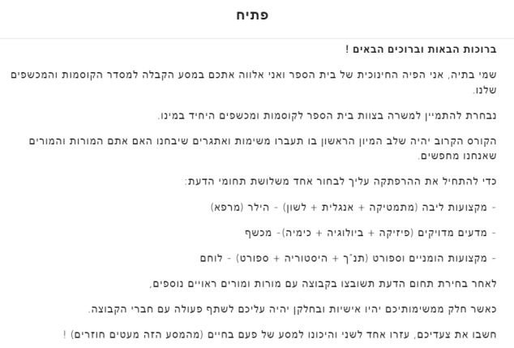
According to Ziv (2019), several characteristics of gamification are expressed in the Classcraft learning environment. The environment is goal-oriented, makes it possible to motivate the target audience, and serves to achieve the target audience's goals in the real world – which, in the present study, is the world of education. Another characteristic is reward. The environment helps us increase enjoyment and arouse participants' sense of agency. Awarding points, creating challenge and giving feedback when moving between stages establish self-motivation among the participants. Finally, the environment is focused on the target audience. The environment was developed for teachers to help with classroom management, so it was easy for us to use this environment, to present its uniqueness to the teachers, and even to present them with additional ways of using the environment.
Ziv (2019) presents the argument of Paniagua and Istance from 2018, according to which the world of education is suited to and widespread in the world of gamification; these aspects are expressed in the Classcraft learning environment. One can learn through storytelling: the clear framework that gamification creates fits well with the principles of story and bounds learning in time with a beginning, middle and end. Another point mentioned in Ziv's article is assessment of learning. According to this principle, learning through gamification serves as a measure for longitudinal assessment that is not necessarily a test; in addition, a gamified component allows learners to track their learning and to make comparisons with themselves and with other participants. Another principle expressed is problem solving. According to this principle, gamification allows the learner to create repetition and to practice again and again. Compared with the traditional way, practice through gamification is more interesting for learners and is not routine in their learning. The last principle mentioned is experiential learning. A gamified environment enables a positive learning experience and arouses motivation to learn. Gamification allows the learner to take part in role-playing, while choosing a character, as offered in this course, and to develop the imagination.
3.2.1 The target audience in designing the learning solution
When we focused on play and gamification in learning, we could not help but recall our personal teaching experiences during the COVID-19 crisis, which the Ministry of Education faced and is still facing. The almost immediate transition to remote learning, and the challenge of maintaining relevance and interest for the learner during a difficult period, required teachers to be creative in the ways they delivered the learning material.
The various education bodies, among them the Ministry of Education and the professional-development centers, in an attempt to respond and provide tools to the lost teacher, made available, to the best of their ability, a wide variety of new – and in some cases even old – methods, tools and means for the teacher's benefit. It was evident that the emphasis at that time was on quantity rather than quality. It was felt in the field that the professional-development courses and guides distributed from time to time missed the mark and left a confused teacher at the end of the line. Among the reasons we felt underlay the implementation difficulties were the teacher's age, fear and apprehension of something new and unfamiliar, the burdens and challenges of the period, and a lack of quality, relevant end-user equipment.
In this project we decided to try to look from a different perspective at the challenges teachers encountered during the COVID-19 period, and to think about what could have helped them. We compared professional-development courses and online guides, examined proposals for interactive remote teaching aids, and saw that the common denominator is that in most of them the teachers are not active enough.
The course we developed invites the learner to remember that teachers were also children, and every child loves to play – we wanted to rekindle teachers' love of play and to show how the world of teaching and the world of games can be combined. The rationale before our eyes was to bring gamification into the classroom, while making learning it simple and not intimidating for teachers. To bring enjoyment back to learning: when the teacher enjoys, it radiates out to the class and the students feel it.
The target audience is teachers of every subject area and every age. Teachers are not required to have a prior background in technology or training in gamification.
We built a course that would be feasible even for teachers who do not connect with computing and technology.
After brainstorming and many ideas thrown into the air, we decided to create a professional-development course delivered through a game. We will turn the teachers into active players in order to bring back the passion for play that was probably buried deep within them, and to rekindle the spark.
The principles we teach, and the way in which we deliver those principles, are applicable and simple to transfer to any existing lesson plan. It is not necessary to turn a whole lesson into a game; rather, from time to time, one can add a gamification principle and see how it works in the classroom – and of course, over time, as with any teaching subject, learn how to refine that tool. The overarching goal was to bring effective, simple and playful knowledge so that teachers would apply what they learned – and not just tick "done" on yet another professional-development course – for the enjoyment and motivation of students during the lesson, and for broadening horizons and learning new skills from which teachers and students alike will benefit.
3.3 Sequence of activities
The course proposed in this project consists of five meetings. The course was built in a graduated manner, emphasizes the principles of play and gamification, and includes experimentation, learning, application and reflection.
3.3.1 First activity – Getting to know games – educational and commercial
The rationale behind the design of this activity and its placement as the opening activity of our course stems from our wish to expose teachers to both entertainment and educational games, in both individual and group learning, so that over two hours the teacher experiments with each of the games. During the first lesson, the teachers will be divided into two groups: one group will experiment with an educational game – Mishak Hak (a Knesset civics game) (Figure 3) – while the other will experiment with a commercial game (Snake.io – Figure 4). During each of the experiences, every participant will note for themselves positive and negative points about the game they played. After about half an hour of play, there will be a group reflection of about 10 minutes on the game experience. Then the groups will switch games. Each group will play for about half an hour, and immediately afterwards there will be another discussion about the experience of the second game.
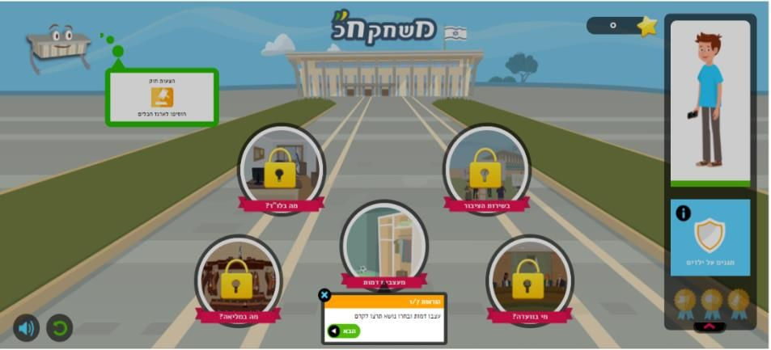
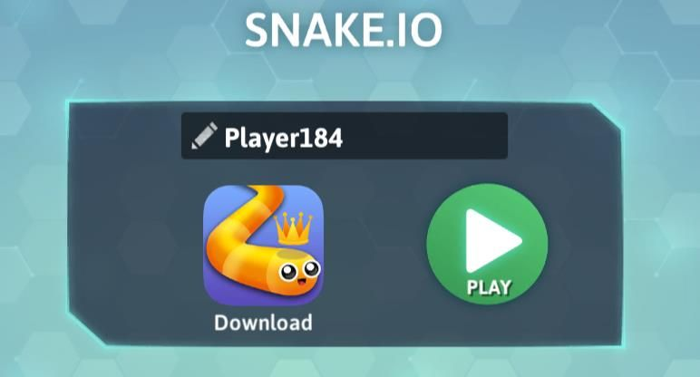
During the discussion, we will guide the participants to reflect on and answer the following questions:
- What was it like to play "Mishak Hak"?
- What was it like to play "Snake.io"?
- In your opinion, what are the differences between the games?
- Would you integrate one of the games in the classroom? If so, why? What would make the game enjoyable? Challenging? In what way does it teach? How does it encourage motivation?
The technological tools we chose for this part of the activity sequence are the two digital games we used – namely Mishak Hak and Snake – chosen, one as a learning game and the other as a game for the purpose of enjoyment, so that the participants experience games coming from different domains, with different goal orientations and different types of reward.
Another technological tool we used at this stage is Google Docs, for building a portfolio for each teacher, in which they can write their reflections and read the reflections of other teachers, and thereby enrich one another with ideas and personal experiences.
3.3.2 Second activity – Getting to know the principles of gamification
As noted, the core of the course presented in this project is learning the six principles of gamification as detailed in the theoretical background. We chose not to teach all six principles in one lesson because we did not want to overload the participants, and in order to ensure optimal learning of three principles in each meeting.
The principles will be learned through the Classcraft learning environment. Before learning the first three principles, the participants will connect to the learning environment. The participants will be shown an explanatory video about the learning environment and a face-to-face explanation by the activity facilitators. Connecting to the learning environment exposes the participants to significant characteristics of play and gamification in learning. The participants will be asked to choose their character (Figure 5), their first power in the game (Figure 6), a team emblem (Figure 7) and even their character's background (Figure 8).
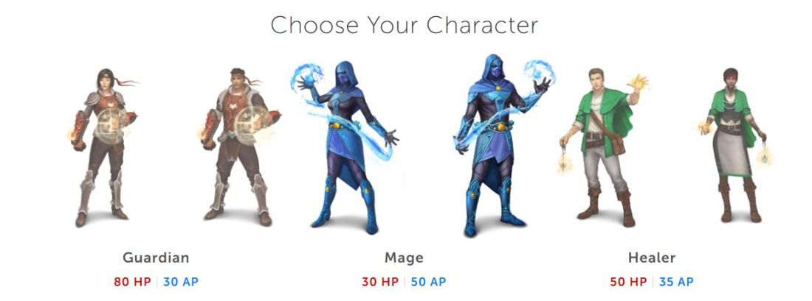
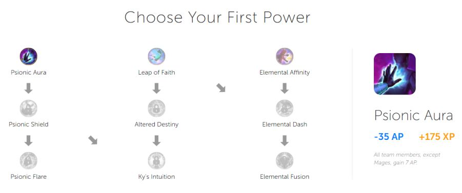
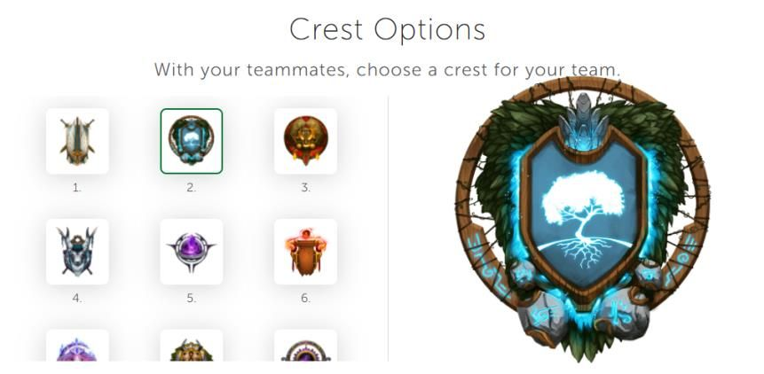
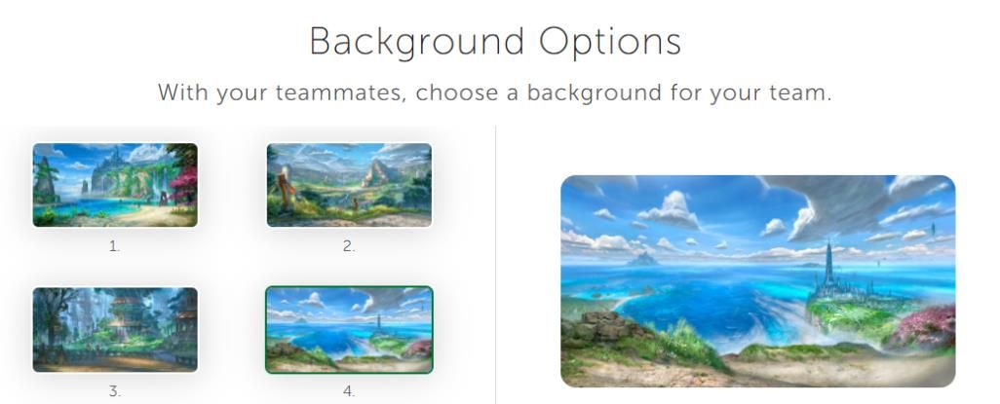
After completing these parts, with our assistance, the participants will begin their journey in the course. After reading the narrative (Figure 2), they will turn to three tasks illustrating three of the six principles they will learn. In effect, each principle is a stage, upon completion of which the participants receive a "gamification stone". To finish the game, six gamification stones must be collected.
As noted, during this meeting the participants will be exposed to three principles:
Play – At this stage the teachers will be asked to solve a puzzle illustrating this principle. After solving the puzzle, they will receive the first of the six gamification stones they must collect (Figure 9). We decided to use an online puzzle-creation interface because a puzzle is a classic game suitable for a wide range of ages that illustrates the principle wonderfully, and at its end an image is revealed that serves as a clue for moving to the next stage.
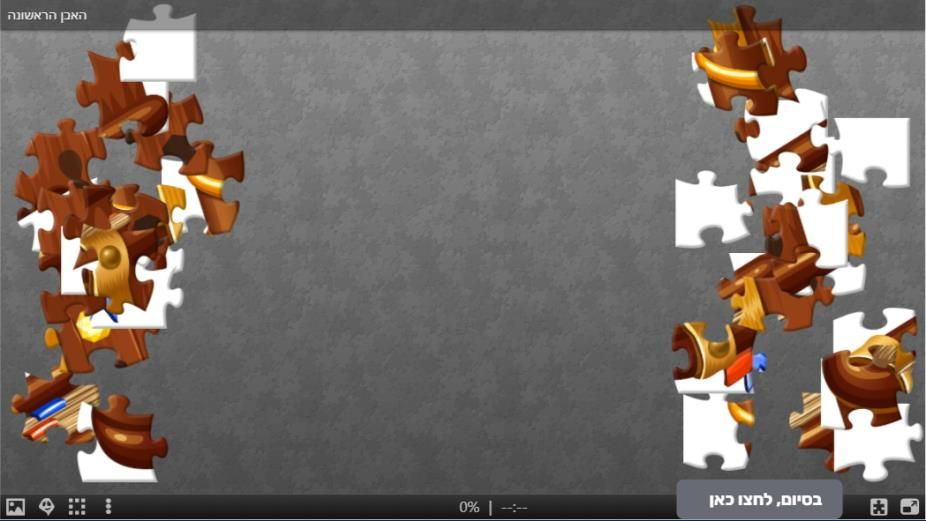
Expositions – The teachers will be asked to find the second gamification stone on an online map (Figure 10).

Choice – The learners must choose, from among three options, the correct way to find the third stone (Figure 11).

After collecting the first three stones, a message will appear to the participants that they have completed the first part of collecting the gamification stones (Figure 12), along with a referral to the additional part of this meeting – expanding on the principles learned in this meeting through prepared presentations. Each presentation presents the principle, an explanation of it, ways in which the principle can be applied in practice, and even a task that the participants will be asked to apply in their classroom (Figure 13).
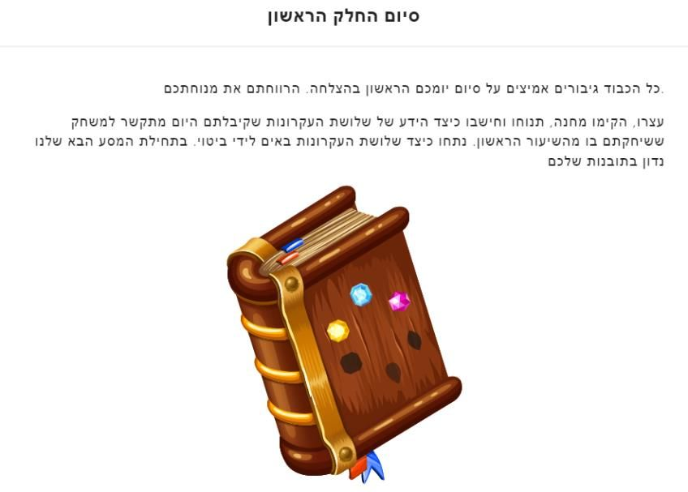
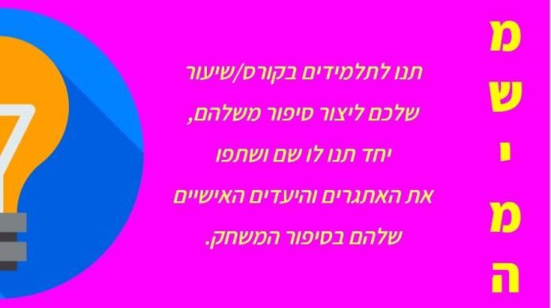
After all the teachers have obtained the three "gamification stones" (succeeded in the three tasks), and after our explanation of the first three principles of gamification, we will hold a discussion in which the teachers will need to examine how these three principles were expressed, or not expressed at all, in the two games from the previous lesson – Mishak Hak and Snake.io. The goal is to share knowledge, to see how each teacher experienced the games, and whether there is an understanding of the principles learned in this lesson.
3.3.3 Third activity – Getting to know the principles of gamification, continued
This activity is in fact a direct continuation of the previous meeting. In this meeting, the participants will be exposed to Nicholson's three additional principles.
Information – The learners will listen to a podcast, watch a news report and look at an image, and try to find what the common denominator of all three is. This activity demonstrates the principle in that information on a particular subject can appear in several different and varied ways (Figure 14).
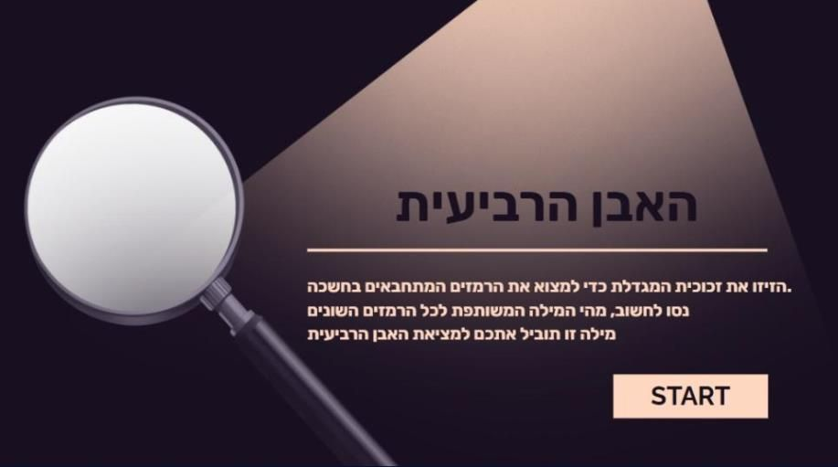
Engagement – In this activity, the learners will be asked to create a shared product, such as creating a video in which they "pass" a movement or an object from one to another. Afterwards, they will need to join the clips into one continuous video, and finally upload it to the learning platform.
Reflection – The learners will be asked to write a reflection on the process they went through during the course. What was their knowledge at its beginning? What did they acquire during it? What will they apply in their teaching?
Upon completion of all the tasks, the participants will be shown the book with all six stones, along with a message announcing the end of the course (Figure 15).
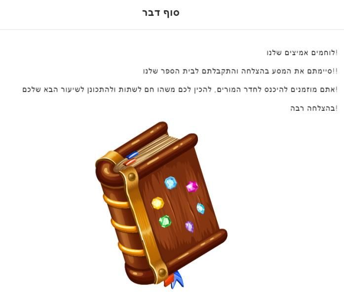
As in the previous meeting, each stage constitutes a stepping stone toward completing the mission, and mediates a different gamification principle, which is also expressed in the nature of the task the teachers will need to perform. To ensure understanding, we will devote time in the meeting to presenting the remaining principles in a presentation in an orderly manner, both as a summary and in terms of application, while referring to ways of using the principle and choosing a corresponding practice task.
At the end of this activity, we will move to the stage of summarizing and demonstrating the six principles through an online Monopoly game, in which the teachers will play in groups of three participants each, after which the learners will be asked to explain how the principles learned in the course were expressed in the game.
3.3.4 Fourth activity – Building a gamified learning unit
In the opening of the activity, the teachers will discuss the previous learning unit, sharing about integrating gamification in teaching, the manner of integration and the way it affected the students, and will recall the principles of gamification they learned in the two previous lessons.
Next, the teachers will turn to individual or discipline-based learning for the purpose of planning the lesson and integrating the gamification principles into it. At the end of this stage, the learners will move to a summary stage, which will include, among other things, uploading and presenting the ideas raised in the groups, alongside feedback from the other teachers.
At this stage, most of the activity will take place in a Google Docs file or using Google Slides. The lesson plan will be added to the reflection files and to the teacher's portfolio, and every plan created will be open to all the learners to comment on, assist, support and shed light on.
The design of this part, separately from the other parts, which took place mostly in the Classcraft environment, stems from our wish to see how the learners perceive and understand the principles, and in what way, outside the context of this environment and within contexts more closely related to teaching in the reality in which they teach. In addition, this part is preparation for the final part of the activity – an open day for presenting the products.
3.3.5 Fifth activity – Open day – presentation of products
In this meeting, the participants, individually or as a group, share their impressions and insights after delivering a gamified lesson in their classroom. At the end of each presentation, each group will receive feedback from the participants regarding their impressions and insights after it ends. Two hours in total will be devoted to this stage of the activity plan, in order to ensure that every group has enough time to present and that everyone also has enough time to respond according to their peers' feedback.
As mentioned in the previous stage, at this stage too, most of the activity will take place in a Google Docs file or using Google Slides. The lesson plan will be added to the reflection files and to the teacher's portfolio, and every plan created will be open to all participants to comment on, assist, support and shed light on – and of course for their personal use as needed.
We would further note that, from our point of view, this is the best way to end this course – that is, with an open day – because such an activity enables the presentation of products alongside reflection and responses, both in order to refine the products and thereby maximize the application of the principles in learning, and in terms of mutual enrichment in learning and collaborative learning.
The course was built so that every teacher can experience all six principles and choose to take from them the principles they connected with and that they will have an interest in integrating into their teaching. Our overt goal in the course was to introduce and teach the six principles of gamification to the teachers and to introduce them to the world of games, while our covert goal was to arouse the motivation of the teachers themselves and to interest them in integrating play and gamification into learning.
4 Implementation (collaborative work)
"All our dreams can come true, if we have the courage to pursue them." – Walt Disney
In the design chapter we took our dreams, connected them, and let them carry us to new places. We dreamed of how we would influence students' learning experience and teachers' learning experience, and help teachers bring the world of gamification into the school space in general and into the classroom in particular. At this stage – the implementation stage – we were required to bring the dream from vision to reality. This process was challenging from beginning to end. We dealt with difficulties recruiting participants, a refusal by one of the institutions designated to take part in the project, irregular meetings, and another wave of the COVID-19 outbreak.
4.1 Preparing for the implementation stage
When we were required, already in the previous year (the 5781 school year), to begin planning how we envisioned the project being implemented, we chose to focus on two different schools – the school where Nissan teaches and the school where Maor teaches. Maor and Nissan each separately arranged a meeting with the management team, at which they presented the project and explained the goals, objectives and needs we were coming to address. Both schools showed initial interest in the project. Each school brings with it a different set of challenges – management-team characteristics, teacher characteristics and different pedagogical challenges. Unfortunately, at the very beginning of the year, the school where Nissan teaches gave us a negative answer and announced that it would not be able to take part in the activity due to time and staffing constraints.
At the opening of the 5782 school year, we found ourselves in a situation where we had only one school interested in taking part in the project. We approached the teaching staff at Maor's school, but received a very poor response from the teachers. The school management did not object to implementing the project, but neither did it express enthusiastic support or help in enlisting teachers to participate. After a campaign of recruitment and persuasion, Maor managed to enlist six teachers from the staff he coordinates professionally, who agreed to take part in implementing the project. It was decided that one staff meeting each month would be converted into a project implementation meeting.
4.2 Planning the meetings
The first meeting included getting to know games – educational and entertainment. The main goal of the meeting was to allow the participants to experiment and form their opinion, and afterwards to hold a group reflection on the different game experiences of the two types of games.
As described in the design chapter, in building the activities we focused on a uniform conceptual structure guiding the conduct of the meetings: at the opening of each meeting we allow the participants to learn and get to know a new piece of knowledge or tool; afterwards we experiment with a game that demonstrates the tool; and finally we anchor the knowledge in a reflection or discussion.
4.2.1 The participants
The target audience defined at the beginning of the project was teachers teaching at the schools of two of the team members. The rationale was to create a wide range of teachers from a wide variety of subject areas in order to obtain a broader picture of the project. Due to the constraints, the implementation was carried out in only one school with six teachers, all of them 9th-grade homeroom teachers. Four of the teachers are language teachers, one teaches biology, and one is the homeroom teacher of a hearing class, in which children with hearing impairments study.
4.3 The implementation process
The course meetings were scheduled once a month and took place in the school's computer room. The implementation venue was chosen out of a wish to find a quiet environment with computers available to the participants. The team implementing the project could see, during the implementation, what was happening on the participants' computers and assist as needed. Before the first meeting, a message was sent to all participants asking them to fill out an introductory questionnaire. The introductory questionnaire provided us with general information about the course participants, their level of familiarity and knowledge with games, and also an initial view of the perceptions, opinions and thoughts held by each participant regarding the integration of play and gamification in teaching and learning. The meetings were facilitated by Maor and Nissan and were video-recorded, with the participants' permission, for the benefit of the other team members who could not take part in the implementation.
4.3.1 First meeting
The first meeting took place in person on 31/10/21. We opened the meeting with a short explanation about the course and an introduction between the facilitators and the course participants. After the introduction stage, we presented to the participants their responses to the introductory questionnaire – the presentation was done anonymously, without revealing identifying details – and we began with the big question: what is the connection between play and teaching?
To try to arrive at an answer, the participants were divided into two groups. Each group was asked to gather around a computer and together they were sent to play a computer game. One group played a commercial entertainment computer game (Snake.io), and the second group played an educational learning computer game (Mishak Hak). This activity was given 20 minutes, so that all group members could experience both watching a participant play and playing the game as a player. At the end of the twenty minutes, the groups switched and each moved on to play the other group's game. During both rounds, the participants were asked to write down their opinion of the game, both in terms of user experience and in terms of the game's content. After about 45 minutes of play we reconvened for a discussion and tried to compare the games – what was similar, what was different – and to understand what experiences the participants felt or identified when watching other participants play. The participants noted the differences between the two games. For example, the participants found Mishak Hak to be a challenging, enjoyable game that requires judgment, compared with Snake.io, which they perceived as a game for release and escape from the work routine.
At the end of this meeting the participants were asked to write a reflection. The reflection was intended to track the participants' progress in the course. The instruction they received was to answer the reflection questions once as a player and a second time as an observer. They were asked to submit the reflection within a week of the meeting.
4.3.1.1 Responses to the first meeting
From the reflections, as well as from the observations of the implementation itself, we see that the participants came without preconceptions and even allowed themselves to enjoy. While the participants were divided into groups and played the computer games together, we heard giggles; the participants reacted enthusiastically to one another about successes or failures in the game, and enthusiasm about the activity was palpable – whether the game was an educational game, with defined goals and a highly structured narrative, or an entertainment game that is more designed and intended to provide experience and enjoyment. In the week following the first meeting, several participants approached Maor to get the name of the educational game, out of a wish to let their children/students try the game.
4.3.2 Second meeting
The second meeting took place on 21/11/21. The meeting opened with a reminder of the experiences of the first meeting. In this meeting the participants got to know the course's learning environment, Classcraft. The participants, led by Maor and Nissan, registered for the environment and entered the course's dedicated online classroom. Already at this stage, differences in the level of proficiency and skill in using digital tools could be seen among the participants. The participants from the older age bracket had difficulty with the initial connection to the learning environment and with joining the course's dedicated classroom. These participants needed the close help of Maor and Nissan in these initial stages. In contrast, the participants from the younger age bracket performed this task with great ease. After the registration stage, the participants were asked to design their character in the learning environment. Here too, two main groups could be distinguished: one group, the younger one, which explored and invested in designing their virtual character (avatar), compared with participants, the older ones, who did not invest thought or time in it and chose the default offered by the environment.
After all the participants had managed to complete the registration stage and set up their user in the environment, they were asked to read the course's opening text. Upon finishing reading the opening, the participants were asked to perform the first task – assembling an online puzzle. When the task opened we heard remarks such as: "Oh, how I don't like puzzles" and also "What does a puzzle have to do with anything now?". One of the participants tried to move on to the next stage of the course without finishing the whole puzzle, but when she was asked to enter an answer on the computer in order to move to the next stage, she ran into an obstacle and went back to finish the puzzle. In this task the participants understood that progress is in fact individual, and one could see participants who finished this stage quickly and moved on to the next stage, compared with participants who lingered at this stage for long minutes. In the second stage of the activity, the participants were asked to find a stone hidden on a map. Here a difficulty could be observed among a considerable proportion of the participants. The participants claimed that the task was not clear enough. After receiving the second gamification stone, the participants were asked to obtain the third gamification stone. Here we already noticed participants who remarked that the interface design repeated itself and that it was therefore easier for them to operate the environment. The third task incorporated general-knowledge questions. Some of the participants approached Maor and Nissan to get explanations or the correct answer. It was explained that they could search a search engine in order to progress.
As noted, progress in the activity is individual, but we noticed that participants who had finished the first three tasks helped participants who had not yet finished. After all the participants had finished the tasks, Maor and Nissan presented to them the presentations accompanying this lesson, covering the first three principles of gamification. In this way a connection was created between the activities in the learning environment and the principles. Afterwards, a discussion was held in relation to the first implementation meeting. The participants were asked to discuss and write down how the principles learned in the current lesson were expressed in Mishak Hak and in Snake.io. The participants wrote on the board the principles that, in their opinion, were expressed in the commercial entertainment game and in the educational game. We ended the meeting with a discussion of the principles and their parallels to things from our everyday teaching world.
4.3.2.1 Responses to the second meeting
In the second meeting we began with a short reminder of the previous meeting and then moved to the learning environment. This time too, the gaps in age and in technological proficiency among the participants were felt. The younger participants again coped easily with the process of logging in to the learning environment, compared with the group of older participants, who still needed the assistance of Maor or Nissan in order to complete the process of logging in to the system. This issue was one of the barriers we anticipated and prepared for in building the project, and therefore more time was allocated to this meeting.
After the initial process of logging in to the learning environment, we saw a very fast learning curve and progress, one that allowed us to advance quickly and finish the first, second and third tasks within the meeting. The learning environment proved itself a success; the course participants showed enthusiasm and spoke positively about the experience of using the environment. In the last part of the meeting, the participants easily managed to bridge between the knowledge they had acquired in the meeting and the experiences from the previous meeting.
4.3.3 Third meeting
The third meeting took place on 09/01/22. This meeting opened with the participants sharing their experiences of integrating one of the principles learned in the previous meeting into their teaching. One of the participants testified that it surprised her students and aroused in them a desire to complete the tasks given in the lesson. Another participant noted that she had been afraid to do so because of losing control of the lesson, but after the experience itself she happily reported how she had integrated the principle into her teaching. Afterwards, we returned to the course's online learning environment. The participants received instructions to advance to tasks number four, five and six and thus complete the six principles of gamification. As we anticipated, in this part the participants experienced more difficulties. First, the difficulty level of the game stages increased. In the fourth-stone task, most participants did not manage to discover the clues within the set time, and even after they found the clues, they had difficulty finding the common word. Mild frustration among the participants could be sensed, and therefore Maor and Nissan helped them a great deal. Difficulty was also recorded in the fifth task, in which the participants were asked to create a shared video. The last task was writing a personal reflection touching on the feelings and experiences during the three meetings. Another reason for the difficulty was that the principles had become more abstract to understand, even after presenting the principles in the discussion held in the computer room and the accompanying course presentations.
After writing the reflection and presenting the presentations, we held a discussion on the principles learned in the current meeting and in the previous meeting, and on how we see them being expressed already the next morning, in the classroom learning environment. We asked the participants whether there is a place for games and gamification in the school teaching environment, and also how these principles are expressed in more classic games such as Monopoly. After some of the participants expressed their opinion, the group received an additional task, similar to the previous lesson: to try to integrate one principle learned in the course into their teaching.
4.3.3.1 Responses to the third meeting
"I've never finished a computer game in my life – what fun this is!" – this sentence sums up for us, in the best way, the experience of the third meeting, and above all the experience of completing half of the project. The course participants dealt with an online learning environment, games, tasks, discussions, reflections, challenging of basic assumptions, and even breaking of conventions. So far, the participants had devoted themselves to the process; they allowed us to lead them on the journey. After the three meetings and the exposure to the principles of gamification, the participants were already able to draw parallels and implications from the content they had learned to situations and circumstances from their everyday lives. The teachers experimented with various examples of applying gamification elements in the learning environment that they could copy into classroom teaching – elements they can integrate without much effort. We received very enthusiastic responses from participants who understood that the intimidating words "games" and "gamification" are not as big as they thought they would be, and are even friendly: "Using gamification is really child's play."
4.3.4 Changes and adjustments made following the first three implementation meetings
After three meetings we paused and looked at the process and at all the meetings so far. As a group we sat and tried to understand whether the process was proceeding as we had imagined and planned it. The course participants had indeed gone through a rapid process, and already within three meetings we saw a difference that was expressed in the meetings themselves, and even in the small conversations during the breaks and in the sharing about small things they had done between meetings. We saw that the goal we had set for ourselves – to expose teachers to games, to give them a positive experience that would create a desire and intrinsic motivation to integrate elements of gamification – was succeeding. Despite the positive atmosphere, we raised concerns about the next stage of the course: implementing what had been learned in the participants' educational setting. In the next stages of the course they would be asked to write a lesson plan in their professional knowledge area, to embed elements of gamification, and to carry out this lesson plan.
As part of the preparation process for the next meeting, we carried out a process of thinking and lessons-learned dealing with the participants' readiness to advance to the application stage. We identified that some participants expressed high satisfaction with the course, and others less so. Therefore, as part of planning the fourth meeting, we chose to make an adjustment: the process of building the learning unit would be done together as a group, in order to increase the chance that a lesson plan would be carried out and not be pushed aside. It is important in this part to recall that the participants are not obligated to the course by the educational institution, and participation is completely voluntary. Unlike the first three meetings, which took place at large intervals from one another, the fourth meeting was scheduled two weeks after the third meeting, and it was set that the fifth meeting would take place a week after that, out of a wish for time gaps as short as possible so that the task would be more focused.
4.3.5 Fourth meeting
The fourth meeting took place on 13.02.2022. We came to this meeting prepared, after the lessons-learned process the team carried out at the midpoint pause. The meeting began with a reminder of the principles of gamification we had learned and the meaning of each one, and then we began, in small steps, to work on building the learning unit. First, each participant was asked to think of one lesson in the coming week that she wanted to build. Afterwards, the meeting facilitators went over, together with the participants, the lesson goals, the required professional content, and which one of the six gamification principles would fit best. After about half an hour, all participants had built one lesson that they could deliver in the coming week. The second task of the meeting was to take the same lesson they had built and add to it the application of another gamification principle. About 10 minutes were given for this task. Afterwards the participants were divided into groups and asked to present their learning units to one another and give feedback. After about another ten minutes of work, each participant had a ready learning unit and an additional idea for a backup learning unit. Each participant presented to the group the unit she was planning to deliver during the week. Already at this stage, concerns were observed about how the students would experience the change and whether it was really suitable – the same concerns we had anticipated in advance.
4.3.5.1 Responses to the fourth meeting
The fourth meeting closed with mixed feelings: some of the project participants felt they were ready to deliver the learning unit that very week, and some felt that perhaps more time could have helped them improve the lesson planning. The choice of a short timetable was meant to prevent dropout and a decline in motivation among the participants. From our acquaintance with them, we felt that a binding time frame that allowed fewer opportunities for evasion would increase the chance that the participants would actually implement the gamified lessons in their classrooms. We also took into account the risk that some of the participants would not be able, due to systemic constraints, to deliver the lesson plan.
4.3.6 Fifth meeting
The fifth and concluding meeting took place on 20.02. The meeting opened with a round of reflection and sharing by the participants on how they experienced the process they had begun about four months earlier. The participants shared that they had gained a different perspective and new tools that they really use. We asked whether they felt more pressure when required to build a game-based lesson plan, compared with integrating the principles in regular teaching without a dedicated lesson plan. After the reflection ended, the participants were asked to briefly present the lesson plan they had built in the previous meeting, the implementation process and the insights. We note that one participant did not manage to deliver her lesson plan: the participant was ill in the second half of the week, and the lesson that was planned to be the implementation was cancelled.
After they presented the activities and the insights, each participant presented what had been less good in the implementation and how the lesson could be improved next time. The participants gave feedback to one another and suggested ideas for future improvement and streamlining. The meeting closed with a summary of all five meetings, leaving an open door for the project participants to approach the project team at any stage, and suggestions from us on ways in which play and gamification could be integrated into learning.
4.3.6.1 Responses to the fifth meeting
This meeting opened and closed with excitement. Both the project participants and we had traveled a four-month journey. During this period we saw our project come to life and become real through the eyes of the participants. The meeting focused on the experiences they had during this period, on their experience of delivering a gamified lesson plan, and on their experiences throughout the course in general. We received positive responses, and most participants testified that they had gained confidence in this area. The participants testified that after the short and concise training they are able to take up the gauntlet on their own. According to them, the tools are not complex and give them answers to small needs and challenges they had experienced but did not know how to pinpoint and define.
What was significant for us, as the team leading the project, was the experience of implementing it. We saw a process of maturation and of overcoming gaps and fears on the part of the participants – from the first meeting, which we began with a wink and a smile, to the second meeting, which was accompanied by frustration in the registration process and the initial operation of the learning environment, and up to the fifth and final meeting, in which the successes of implementing the lesson plans they had planned were presented.
4.4 Summary of the implementation
The implementation was conducted successfully, and despite the low number of participants, it appears that they internalized the content learned in the project. One of the goals of the implementation was to give the teachers an opportunity to develop in the world of play, and to provide them with the tools and ability to embed the principles of gamification within their classroom teaching. This goal, in our view, was achieved well. The course participants took what they learned, implemented it within a dedicated task, and some also integrated principles into their regular teaching without guidance from us. In addition, although the training was not recognized as a professional-development course for any of the project participants, we did not feel a difference in the level of commitment and involvement.
Within the course we succeeded in making accessible knowledge that may be perceived as threatening and disruptive, in a way that teachers will actually be able to apply what they learned and not "just go through another professional-development course". Activating the teachers through a game and integrating the principles of gamification into the training itself were important components that, in our impression, contributed greatly to the attempt to bring back their passion for play – which had probably been buried deep in the past over the years – and to rekindle the spark.
4.5 Insights from the implementation
From a critical perspective on the duration of the project's implementation, we felt that the course could have been shorter and more focused. The large intervals between meetings posed, for us, a risk of participant dropout, and above all a risk to understanding and internalizing the material.
Another insight that arose is that the tasks in the learning environment are not uniform in level and the gaps between them are large. Some of the tasks were completed within a few seconds, while others required significantly more time.
A third insight we reached concerns the integration of the teaching aids – the presentations, in this case – during the course. We presented the presentations after the activity, out of a thought of connecting the various activities to the pedagogy behind each activity. It is possible that the presentations were too short and not clear enough.
The last insight we reached is that such a course – which, in our dream, will be delivered as part of teacher training in the future – needs expansion and upgrading, and above all, it requires that the participants want to take part in it in order to expose themselves to new ways of teaching.
Notwithstanding the above, we are proud of the project we established and we believe that the course participants gained insight and broadened their knowledge of integrating gamification in teaching.
5 The research
This chapter focuses on the research aspect of the project – the research method by which the study was conducted, who the research participants are, the research tools, the methods of data analysis, and its findings.
5.1 Methods
5.1.1 Methodology
This study was conducted using the qualitative research method while quantifying the data according to the approach of Chi (1997). The qualitative method occupies a central place in research and in deriving meanings from phenomena in the social, cultural and educational world. This approach enabled a holistic examination of the background, motivation and attitudes of the research participants.
Qualitative research is fundamentally descriptive and allows penetration into the phenomenon being studied. Within this type of research, social phenomena and situations can be studied with the aim of creating a holistic view, reaching new insights and attributing meaning to them. The researcher is involved in exploring the field, focuses on the point of view of those being studied and on how they understand things and interpret their world. A broad understanding of reality stems from motives to add knowledge about a particular phenomenon, and not to judge it or express an opinion (Velitzker, 2000).
5.1.2 Research participants
Six teachers, all 9th-grade homeroom teachers at a middle school in Kiryat Motzkin, participated in the study. Participation in the study was voluntary. It is important to note that Maor, one of the team members, is the 9th-grade coordinator, and the meetings were scheduled based on the fixed hours of staff meetings (as described in the implementation chapter).
The participants' ages ranged from 37 to 57 (with a median age of 51), and their seniority ranged from 5 to 35 years of teaching (with a median seniority of 17). During the study, the participants were asked to work both individually and in groups. In addition to being homeroom teachers, four participants are teachers of Hebrew language, and another teacher is the science coordinator. The sixth participant is the homeroom teacher of a hearing class – a dedicated class for students with hearing impairments of varying degrees.
5.1.3 Tools and data sources
The study used several means of collecting research data – semi-structured interviews, observations and reflections.
5.1.3.1 Interviews
In order to better understand the processes the participants went through during the course, two semi-structured in-depth interviews were conducted with each participant. One interview was held at the beginning of the course (Appendix 1) and a second interview was conducted at its end (Appendix 2).
All participants were interviewed, since the research group was small and therefore the contribution of each participant was high. The interviews took place face-to-face at the school at the end of the school day. The average time for each interview was about 25 minutes.
The interviews were recorded, with the participants' consent, using a voice-recorder application on the interviewers' personal mobile phones. The interviews were transferred to and saved in a cloud folder with access restricted to the research team only. The interviewers transcribed the interviews themselves and passed them on for reading and initial analysis to the team members who had not participated in the interview.
5.1.3.2 Observations
Observations make it possible to document phenomena as they occur, and it was therefore decided to conduct observations at all course meetings, focusing on the interaction among the participants themselves, and between the participants and the course content and learning environment. Shkedi (2003) presents the definition by Marshall and Rossman from 1989, according to which observation in qualitative research is the recording of events taking place in the environment being studied, including events and behaviors. The observation took place at all meetings, with one of the research members delivering the session and another team member documenting events by hand.
5.1.3.3 Reflections
As part of the course, the participants were asked to write a personal reflection after each meeting. The reflections served as a basis for the interviews held with the participants after the end of the course.
5.1.4 Methods of analysis
The data analysis was carried out according to Chi's qualitative analysis method. All the data collected throughout the project were analyzed (no reduction was performed). The data analysis was inductive. After the interviews were held, each interviewer analyzed the interviews they had conducted and "broke down" the answer to each question into parts thematically. Once we had identified the leading themes from the interviews, each researcher compiled a list of possible codes with reference to the narrative from the interviews. The possible codes were grouped into 4 parent codes: prior experience with digital games, contribution of the training to the role, integration of gamification in teaching, and contribution of gamification to student motivation. All the qualitative data from the various sources were grouped and analyzed together. Afterwards, we carried out an inter-rater reliability test, during which we reviewed all the codes against the interviews, and reached 98% agreement.
Table 1: Research questions, research tools and method of analysis
| Research questions | Research tools | Method of analysis |
|---|---|---|
| 1. How was the teachers' prior experience with digital games expressed during learning in the course? 2. How do the teachers perceive the contribution of the training (the activities) to their role? 3. How did the teachers' perception regarding the integration of gamification in teaching change while learning in the learning environment? 4. How was the teachers' perception of the contribution of gamification to student motivation characterized during the course? |
• A structured interview with each of the course participants. • Facilitators' observations throughout the course. • Reflections |
Inductive qualitative analysis according to Chi's method |
Table 2: Coding of central themes from the participants' interviews and reflections
| Parent codes | Possible codes | Definitions | Examples |
|---|---|---|---|
| Prior experience with digital games | Technological apprehension | Participants who testified to apprehension about using a computer, software or applications | "As I mentioned, I was apprehensive about using the computer," |
| No prior experience | Participants who testified that they have no prior experience at all with regard to digital games | "I don't have rich experience with computer games; I mainly play app games" | |
| Has experience | Participants who testified that they have (some kind of) general prior experience with regard to digital games | "My only digital experience is in the game Candy Crush and the like" | |
| Contribution of the training to the role | Prior knowledge in the field of gamification | The participants testified that they had learned about gamification in teaching in the past | "Gamification in teaching is something I have been exposed to several times in my trainings as a teacher" |
| Expectations | Expectations from participating in the course – what they will get, what they will learn | "My expectation from the course is to receive new information that I have not been exposed to in the past" | |
| Negative feelings | Negative feelings and experiences that the participants shared about the course | "I'm concerned that the course was too loaded." | |
| Positive feelings | Positive feelings and experiences that the participants shared about the course | "It was important to me to succeed and to experiment, and I also submitted, in collaboration, the lesson plan integrating gamification – from my personal point of view, a success." | |
| Integration of gamification in teaching | Manner of integration | The form and manner in which they will choose to integrate gamification in their teaching | "When I sat with myself and thought about which principle I could apply in the lesson in the best possible way, this principle was the obvious answer for me." |
| Will not use | Participants who stated that they will not use what was learned in the course | "As I mentioned, there isn't much room for action in my subject area." | |
| Used even before | Participants who stated that they had used gamification in teaching before the course | "I love using games a lot in my lessons – of course Kahoot, crosswords that I create for the students – and in addition I like to take the students outside and, in the form of a game, create interaction with the students in order to encourage discussion." | |
| Contribution of gamification to student motivation | Students' responses | Students' responses described after the implementation / integration of gamification in teaching | "The students enjoy it; it breaks the routine a bit" |
| Feelings the teacher identifies | Feelings that the participants report identifying among the students | "It was a completely experiential lesson from my point of view and from the students' point of view; without noticing, the lesson was over." |
5.2 Findings
5.2.1 How was the teachers' prior experience with digital games expressed during learning in the course? (Maor)
During the interviews we identified one parent code dealing with this research question, which includes three trends. The trends are: technological apprehension, no prior experience, and participants who testified that they have experience. During the implementation of the project, and also in the concluding interview, a connection was identified between the participants' level of prior experience with digital games and their ability to cope with the various tasks in the course.
Participants who described themselves as lacking prior experience were identified as teachers who experienced more difficulties. In the observations it was identified that the lack of experience was expressed in requesting and receiving help from the project facilitators. Some of the requests for help concerned connecting to the course's digital environment – "How do I connect?", "Where do I click to move on?", "I didn't know where to write it" – and some related to the way tasks were performed in the learning environment: "What do we do in this task?", "How do I move on?". In addition, during the observations, the same participants who had difficulty with the basic operation of the course's digital environment were observed; some of them even testified to apprehension about the technological aspect: "I'm less in command of the technical side of computing, and I also have a kind of fear of it" and "I connect less with the technological side".
Participants who described themselves as having prior knowledge and experience with digital games stood out during the course, demonstrated a greater sense of self-efficacy, and even helped participants lacking experience. One of the participants noted: "I don't have rich experience with computer games; I mainly play app games... On a personal level I succeeded and, more importantly, I enjoyed it". Another participant testified: "The experience undoubtedly contributed to me; there was a very clear flow in the course, I always knew what to do, also because I was broadly familiar with the terminology; I had no apprehension and I simply had fun". These two participants also asked the project facilitators for dedicated training on the digital learning environment in which the course took place. These participants were not apprehensive about experimenting with a platform unfamiliar to them; they wanted to take the learning to a higher level. One of the participants noted: "I would very much like to learn about the environment we experimented with – that is, to create a learning unit in that same environment. I was so excited about it, and it's a pity you didn't get to teach us about it".
During the concluding interview, the four participants who described themselves as lacking experience with digital games said that they felt they had made it through the course and came out of it with a better understanding of gamification in teaching and the principles of its application. One of the participants testified: "The truth is that I had no prior experience with games... I will say about myself, even though I don't like doing so, that yes, I succeeded in the course". Another participant testified: "I have no experience at all with digital games; I don't even play on my mobile phone – so in that respect there is no contribution or prior knowledge on my part. Despite this lack, I think I succeeded in the course. The thing I liked most is that I don't need technology at all to integrate the principles of the game into my lessons – you didn't force the computer on us". The participants with prior experience with games claimed that their prior experience contributed a great deal to them during the course. In addition, they testified that they had helped the other participants several times, which we noticed during the implementation.
5.2.2 How do the teachers perceive the contribution of the training (the activity) to their role? (Aviram)
Teachers in the education system are accustomed to participating in various types of training, seminar days and workshops throughout their careers – some more useful and some less useful. From the analysis of the interviews we identified a parent code dealing with the contribution of the training to the role. Five of the six course participants noted that they had some prior knowledge of play and gamification: "In trainings and professional-development courses too, I was exposed to games that can be integrated into teaching"; "The term gamification, by my logic, immediately directs me to the word 'game', so I imagine it is something that has some playful aspect. If that's what is meant, I hardly use playful tools in my lessons. On a few occasions, when the class asks, I look for a Kahoot on the topic, but rarely". Some of the participants had been exposed to the subject in professional-development courses and some during their degree studies. But across the board, all participants stated that they would be glad to receive tools for embedding games in classroom teaching. The participants stated that they expect the training to provide them with knowledge about integrating games in teaching, and to receive new and relevant information in the field.
In the concluding interview of the study, the participants were asked: "After being exposed to the principles of gamification through the course, what do you think is the contribution of gamification to teaching?". The participants described to us their experience of the course within the project and how, in their opinion, the course affected their way of teaching. Four of the six course participants testified to positive feelings of success and enthusiasm: "It was important to me to succeed and to experiment, and I also submitted, in collaboration, the final assignment – the lesson plan integrating gamification – from my personal point of view, a success". Two of the participants testified to negative feelings, stemming mainly from information overload and a course with many tasks: "I think the course was too loaded, with a lot of irrelevant information". It is important to note that these two teachers are the oldest teachers in the group.
Across the board, the participants testified that the course was a positive experience – one that, unlike many formal trainings they have undergone, will also accompany them in the future. The combination of reinforcing the principles of gamification in several ways (task, presentation, assignment) helped them understand the principles, and proved to them that each of the principles learned can also be expressed without the use of technology. According to the participants, these points helped them in a conceptual change and in applying and embedding one or more principles in their daily teaching.
5.2.3 How did the teachers' perception regarding the integration of gamification in teaching change while learning in the learning environment? (Nissan)
During the analysis of the interviews we identified a central parent code dealing with the integration of gamification in teaching. This parent code presents three main trends: the way in which the participants will integrate gamification in their teaching, participants who will not integrate gamification in their teaching, and participants who had integrated gamification in their teaching before the course.
Of the six course participants, two have prior knowledge of gamification, understand its importance and have integrated it into their teaching. One of the participants noted: "The field of play and gamification is not new to me; I am aware of its importance in teaching and try to integrate it as much as possible into my teaching". Another participant shared the effect of gamification on her teaching: "Gamification is something natural for me in teaching". However, we noticed that four participants were not familiar with the concept of gamification before the course. One of the participants said: "The truth is that I'm not familiar with the concept of gamification in its technological aspect... I'm familiar with the concept of the game and integrate it into my teaching, mainly Kahoot". Another participant said in the interview: "When Maor came to us with an idea for integrating gamification in teaching, I didn't really understand what that meant. I was sure it was about integrating games into teaching, something I think I do from time to time". Another participant elaborated: "The term gamification, by my logic, immediately directs me to the word 'game', so I imagine it is something that has some playful aspect. If that's what is meant, I hardly use playful tools in my lessons. On a few occasions, when the class asks, I look for a Kahoot on the topic, but rarely". For another participant the concept was completely foreign, and she said: "Broadly speaking, I'm not familiar with it (the concept), and because of that I also don't use it in my lessons".
Two participants noted that despite the course, which they completed successfully, they will not use gamification in their teaching on a regular basis. This was made clear by quotes such as: "I was less enthusiastic than my colleagues" and "There isn't much room for action". Using a new way of teaching presented in the course – gamification – is not something easy to embed without openness and a desire for change in their work. It should be noted that these two participants have been in the education system for over 25 years, and their way of working is fixed and known to them in advance. Therefore, when they testified that they would not use the content learned in the course, we were not surprised.
Two participants testified that their perception had changed and that they see great importance in integrating gamification in teaching. One of them noted the effect of gamification on learning: "It (gamification) has a worthy place in teachers' continuous learning, and in my opinion teachers and students both gain from it. The students enjoy it, it breaks the routine a bit, the teacher moves a little away from the central role and gives the stage to the students. In one word – enjoyment!". Both participants noted one of the advantages of the principles of gamification: that it does not require technological innovation. One of them said: "The thing I connected with most is that the principles of gamification don't necessarily require a technological environment. You can take any principle and apply it physically, whether it's creating a narrative, collaboration between the students, or the option of choice". In response to another question she said: "I can undoubtedly see the many advantages gamification has in teaching – a lighter atmosphere, more desire and enjoyment among the students, something different from the lesson routine that students and teachers are used to. The most significant thing for me is that technology is not needed at all to integrate the principles in teaching, and that is something I will indeed try to apply in my lessons".
5.2.4 How was the teachers' perception of the contribution of gamification to student motivation characterized during the course? (Guy)
During the analysis of the interviews, a central parent code was identified dealing with the contribution of gamification to student motivation. This parent code presents two main trends: students' responses and the teacher's feelings.
Among the teachers' central expressions regarding their perception of the contribution of gamification to student motivation during the course, one participant said: "Now they are enthusiastic about learning, happier and more energetic"; another said: "It adds a new dimension to learning", and added: "The students are more creative in the lesson; it really gives them a boost"; and another teacher said: "The students enjoy it; it breaks the routine a bit". On the other hand, many participants did not talk at all about gamification in teaching in their classroom; a possible reason for this is that in the past year they had to deal with the outbreak of the pandemic and the latest Omicron wave that struck us.
One of the most significant statements by the participants was: "Gamification is something that should be embedded in every teacher". Another interesting finding, according to the concluding interviews that were conducted, was the fact that at the end of the course the participants integrated more gamification principles than technological means or digital games, which often take place in a technological environment – and this regardless of the participants' level of prior experience with the world of gamification.
5.3 Discussion, conclusions and implications
A guiding principle in building our course was making the use of gamification accessible without a necessary need for prior experience with games. Based on the observations and interviews we conducted, it could be seen almost unequivocally that participants with prior experience with games showed mastery, did not express apprehension and even helped their colleagues during the course. These findings are consistent with the findings of the study by Annetta et al. (Annetta et al., 2013), according to which participants with prior experience will experience a greater sense of self-efficacy compared with participants with no experience at all. Participants without prior experience with games experienced difficulties, expressed apprehension and even frustration during the activity. Furthermore, it was found that half of the participants who described themselves as lacking prior experience with games expressed difficulty and lack of knowledge. In this study, all participants experienced a sense of success in the course, which was one of the leading goals in building the project.
The teachers' statements, both in the interviews and in the documentation of the implementation observations, are consistent with the research literature. The interview findings regarding the research question that examined the teachers' perception of integrating gamification in teaching show that integrating gamification is perceived as important and meaningful by the participants.
Regarding the contribution of the training to the role, the participants reported that learning became more enjoyable for them and more meaningful for their students. Ziv and Gilutz (2019) also note that gamification helps develop content processes, assists teaching and empowers learners.
As for the research question dealing with the contribution of gamification to student motivation, it can be seen that the participants' responses were consistent with findings from the study by Park and Kim (Park & Kim, 2021), who found that using gamification principles improves the learner's motivation as well as their approach to learning.
The study had several limitations. First, the study included only six participants. Despite the findings, this number of participants does not allow the results of the study to be generalized to the population as a whole. The low number of participants contributed to the facilitators' availability during the meeting, so that they could answer and assist when problems arose for participants with technological difficulties. Another limitation is that the research participants took part without receiving compensation and on their personal time, with the course at times extending beyond the participants' working hours. Therefore, we were at times asked to shorten, or to teach the main points more concisely.
This study can greatly help in thinking about teacher training for integrating gamification in teaching and learning. Integrating an experiential, game-based course within regular teacher trainings may serve as a foundation for teachers who are not familiar with, or not sufficiently versed in, integrating these elements in their teaching, and will allow them to upgrade their teaching methods. There are several bodies in the education system that have the knowledge and capabilities to promote trainings of this kind and even to make them accessible to teachers through the familiar channels, both in terms of the manner of accreditation and in terms of the costs of time and investment for the participants.
6 Reflections
6.1 Guy Kaufman
From the very beginning of the research, it was clear to me that I wanted my project to deal with the training of teachers, and that, as far as I was concerned, meaningful action and the most practical path to creating real change go through the teachers. The view that the research should deal with the teaching of teachers was shared by three of the four group members – Nissan, Aviram and myself – while Maor, who was in the minority and thought the project should deal with students, eventually had to give in and come on board with our idea.
There is no doubt that I could not have found a better team than the one I got. The work ethic, the mutual responsibility and more helped us along the way and allowed us to achieve excellent results. I also felt that I could rely on my group members, and I always knew that the work was divided among us equally. The working style of Sarit at first, and later of Ornit, allowed us to be independent in the field and not to be afraid to dream big. The fact that the other groups worked on projects whose main target audience was students also allowed us to move freely in the space without worrying that another group was already doing something similar; but on the other hand, it required us to be serious, to propose creative ideas and to try to bring them to execution, without any ability to compare ourselves to anything.
The idea that the project would deal with imparting and embedding Nicholson's principles of gamification did not come in a single moment, but once we reached the final decision that this was the topic, everything began to flow better: the idea took shape and came to life, and once we found the right platform, the ideas for tasks illustrating the principles of gamification themselves were not long in coming.
However, not everything went smoothly. It also took a long time until we found where we could implement the project, and even when we thought we had found a school – at one of the group members', Nissan's – in the end the school did not approve the implementation and we had to keep searching. Eventually, the school of another group member, Maor, agreed to implement the project.
I must admit that the hardest part of the project for me, and the part I feared most in the process, was the stage after implementing the research – the results and reaching conclusions. Perhaps this is because I do not have much prior experience with conducting research; that is, it is one thing to collect data, but something else entirely to analyze it and reach conclusions.
Were it not for my group members, I am not sure I would be where I am, and for that I have my full appreciation for them. As for what I take forward, it is mainly the understanding that I do not always hold all the cards, that I do not always know everything, and that, more than once, teamwork and the willingness to be helped by others lead to wonderful places and yield meaningful results – but no less important is extending a helping hand in return when another member is in trouble.
Despite all the difficulty, there is no doubt that this was a meaningful journey for me, and I would not change a thing – and certainly not any of the team members who were always by my side throughout the entire journey. I will probably no longer be a teacher, but I have found a refuge for myself in informal education, and this is probably where I will stay.
6.2 Maor Cohen
In the Design Research course, part B, when we split into work groups, I knew that my target audience would be students. From my personal perspective, it is very challenging to work with teachers – they are set in the way they teach and not open to change. When I joined Guy, Aviram and Nissan, they were locked on the idea that the project had to be for teachers. The truth is that I had disagreements with myself: on the one hand, I did not believe in a project for teachers, but on the other hand, the group members were serious and responsible, and working with them was a privilege. In the end they convinced me that the target audience would be teachers. In our initial brainstorming sessions we threw lots of ideas into the air – as Sarit said: "Here you're allowed to dream". For me, the concept of throwing ideas into the air, with team members giving their opinion for or against, and ideas growing from there, is excellent. I am always happy to hear other people's ideas, to get a different perspective, and on the other hand to receive criticism of my own ideas. What is more, in our team there was a safe atmosphere to say whatever came to mind – at worst it is not accepted and we move on. The work flowed wonderfully for me. The concept of gamification was interesting, as were finding the right platform, building the tasks and so on.
When we discussed in which school we would implement the project, Nissan volunteered his school (this was in May, a year earlier). At the beginning of the year Nissan spoke with the principal and the teachers on his staff, but unfortunately without much agreement. We did not know what to do; I told myself that at my school they would not even consider implementing the project and that it was not worth trying. Because Nissan and I were the two active teachers in the group, there was no other choice – otherwise we would not run the project. I was surprised when the principal and the team of 9th-grade homeroom teachers at my school volunteered, and even gladly, to help me – I felt uplifted that we would be able to implement the project after all and that not all the work had been in vain.
Today, looking at it from the side, I had a most empowering experience presenting a new way of teaching to the teachers. They were happy, asked questions, and really got into the process. While running the lessons, I also understood better the meaning of the difference between gamification and games, and ideas came up for a follow-up project – what needs to be made more accessible or corrected so that the message will be clearer. It is a pity there is no possibility of continuing it.
In my bachelor's degree I did not have to submit a seminar paper, and in this degree, when we reached the paper-writing part, I got stressed – I did not have much to offer my friends by way of help, due to my lack of experience with papers of this kind. It helped me a great deal that the writing was divided by chapters and there was enough time for each chapter, and also that we in the team divided the work equally among ourselves, and I could always rely on them to help me if I got stuck.
My research question was about the teachers' prior experience with gamification. I went to the recordings of the meetings we held and to the interviews, and I recalled the experiences of the teachers and of myself in particular, and the truth is that writing the answer simply flowed for me. I knew what I wanted to write and which things to emphasize, and I enjoyed the inquiry process of taking the data, comparing it with the literature and writing an answer that is my own – research that I carried out. As a science teacher, it is an experience to run a study, even if on a small scale.
Throughout the process I did not feel pressure or anxiety from the team; even when someone had a heavy load at work or at home and needed help with their part, someone always volunteered to help, and we supported one another throughout the project. Thanks to this there was always a positive feeling and a pleasant atmosphere, and I personally enjoyed the whole process – and again, all of this is thanks to the team of friends who were with me.
I do not see myself leaving the Ministry of Education. I believe that real change must come from the field, and therefore I will probably not take part in future research as the researcher; but an important thing I will take forward is not to be fixed in my thinking. As I mentioned at the beginning of this reflection, I did not believe that teachers were the right target audience, or that their opinion could be changed at all. I was pleasantly surprised that two of the teachers will take the material we taught and integrate it into their lessons out of their own will, and in general all of them pitched in to help and spoke positively about the project. One should always try, and not decide in advance for another person – at worst they say no, but do not rule it out in advance.
In summary, this experience was enriching, fun and instructive, and I am very happy that I got to take part in this project. I was active, I did not let my lack of experience take over, and I learned a great deal, not only as a researcher but also as a teacher.
6.3 Nissan Daniels
6.3.1 The dream
About a year and a half ago we were asked to dream about a project we would like to implement in the education system, with an emphasis on play and gamification. I had no doubt that the project I dream of would deal with teachers. As the ICT coordinator at the school where I teach, I saw how during COVID-19 teachers had to reinvent themselves. Some succeeded more, some less. The point is that there were teachers who taught remotely but carried on as usual. The children read aloud from a book, wrote in notebooks, and did not benefit, as much as possible, from the integration of technology in their learning.
At first, I thought of preparing a large repository of educational games that teachers could use. I very quickly understood that the project would be somewhat difficult, since there are veteran players who have been doing this long enough. Therefore, I thought it would be right to teach the basics and build a project that would teach teachers how to build good educational games.
To my delight, I saw that Aviram, Guy and Maor shared a common dream. Although Maor very much wanted to work with children, he understood the potential inherent in this project.
6.3.2 From dream – to reality?
After we all agreed that the project would deal with teachers, we began to think about what we wanted to convey to them. At first we thought of embedding Gee's principles of games. With Sarit's help and advice, we understood that this hurdle might be difficult to implement, and she directed us toward Nicholson's six principles of gamification. After delving into the principles, we thought about how to teach them in a way that is enjoyable and experiential for the learners. We remembered that in one of the courses we had been exposed to a gamified platform called Classcraft. The moment we downloaded the platform, we understood we had a "bingo". Creativity flowed out of all of us, and we began to compose a frame story for the course, and it was great fun to see it begin to take shape, gain substance and acquire characters in Classcraft. For each principle we built a task that demonstrates the principle in the best way. In parallel with the work in the learning environment, we developed presentations and lesson plans for the project. We always thought about how not to make the project boring for the learners, but rather interesting, attractive and such that it would make them learn out of a desire to improve their teaching, for themselves and for the students.
At the end of the first year we submitted the project knowing that we had a unique, interesting project – one that could bring about a real revolution in the education system.
6.3.3 The test of reality
The project was supposed to take place at the school where I work, but due to various constraints it did not materialize. To our delight, Maor recruited his team of teachers and we set out. Since Maor and I teach in the same city, I participated in the project meetings.
It was fascinating to see our investment pay off. During the implementation, and especially in the part where the Classcraft learning environment was used, I felt great pride seeing the participants learning, enjoying and afterwards even applying what they had learned.
Notwithstanding the above, not everything went smoothly – COVID-19, quarantines, postponed meetings and other reasons were delaying factors for us. Despite all of these, the group members and I always kept our finger on the pulse and made small changes to move the project forward. I can say today that in making those changes I learned a great deal about the role of the researcher and how much they must be prepared and ready for things they had not planned for at the outset of their work.
6.3.4 From deeds to words
The part of writing the final paper felt to me like a roller coaster. At times there were parts that went smoothly, without any difficulty or obstacle, and there were parts in which I felt that we were getting lost and the difficulty was great. I had never conducted research of such a scale and of such importance, and therefore the sense of helplessness and frustration was great at times. However, together with the right guidance, the feedback of my peers and, above all, the encouragement I drew from my group members, I managed to overcome these feelings and write a good paper – one for which I was even very moved to receive recognition in the form of the Yaacov Don memorial scholarship.
6.3.5 Final words
Before I enrolled in university studies, I had many concerns and questions: How would I combine my studies with the fact that I am a homeroom teacher? What would be the effect on my family of the various demands and assignments? What would I get out of it? How would studies take place during a pandemic? And many more questions.
To my delight, the community we created, and the support and encouragement from home and even from my students, helped me get through the last two years with great success and submit a project of which I am very proud.
I want to thank my group members – Maor Cohen, Aviram Weisberg and Guy Kaufman – for their support, help, encouragement and professionalism. I could not have chosen better partners for this journey. Thank you to all the lecturers for their belief and guidance over the last two years, and many thanks to my family for their support during the long hours when I disappeared into the computer screen and Zoom.
6.4 Aviram Weisberg
I will begin with the sentence that has accompanied me since the first day of the degree: "Hi, I'm Aviram, and I don't come from the field of education, but…". My journey, and the project's, began with the coronavirus. In February 2020, when we began to hear more and more about cases of infection and started to feel that there was something a little more serious here than "a flu with good PR", I was a master's student in organizational sociology at the university. From a first-year student with a thesis supervisor, a clear track and a guaranteed clinical field for research – within less than a month, my clinical field closed its gates to outsiders, the degree went online, and it proved to all of us that even the best organizational consultant could not have predicted the magnitude of the crisis and its effects on our lives. Like the education system, my workplace also experienced change, upheavals and challenges as a result of the period, which required me, as a learning partner, to go out searching and to understand how things could be done differently. On the recommendation of a friend who had just finished the degree in the program, I considered the degree in learning technologies.
At the beginning of the second semester of the first year, we were asked to dream about a project we would like to develop and implement. I was interested in giving tools to lecturers and workshop facilitators on how to teach in a different, alternative, experiential way. That project formed for me the basis for the challenges I experienced in my day-to-day work. Luckily and happily, I got to join Nissan, Guy and Maor, with whom the four of us shared the common denominator of teacher training and the learning experience.
During the semester, PLAYGROUND began to be born. It seemed as if each of us naturally found his way into the slot that suited him and that he suited. Guy, who led the information gathering and always made sure to bring us another article and another theory, and to read another piece that might complete the picture and help us move forward; Maor, who, the moment we were told to dream, went with it as far as he could and brought the dream to reality with his staff; Nissan, who always kept his finger on the pulse and made sure the work ticked along, and in the end also implemented everything into a functioning system; and I, who received an almost free hand from the team members to go wild as a designer with the content, the look and feel, and ultimately the experience this project created.
My friends did not mention it, but every week during the semester, and sometimes also during the breaks, on Saturdays at 19:00 we met and worked, read articles, edited another part of the paper, and thought about how to move on to the next part. We were never satisfied with doing only the current stage; we always tried to think about the next step. During the first year Dr. Sarit Barzilai, and after her, during the second year, Dr. Ornit Sagy, kept pushing us and directing us to strive for more and to keep refining the project, the work and the process. Writing the paper was challenging; from working in parts and from the critiques of our fellow students we learned a lot ourselves, but at times it also felt that we were taking two steps forward and one step back in the writing process.
I got to see the project itself implemented only in the recordings, because of coordination difficulties, schedules and, of course, COVID-19 as well. But the viewer's experience was no less meaningful for me than the implementation experience of my colleagues Nissan and Maor. I saw how the teachers went through the process – without knowing them and without meeting them physically – I saw the change they underwent from meeting to meeting, and from Maor and Nissan we heard about the experience of working with them. My research question dealt with the way the participants perceived the contribution of the training to their role; the opinions were, on the whole, positive and supported the thoughts with which we set out.
Of course, not everything went smoothly, and there were glitches and challenges that met us from the beginning of the process, whether at the stage of coordinating the implementation or during the implementation itself; but with the perspective of time, these challenges were amazing opportunities for progress that we seized, and thanks to them the project got to where it got.
During the last year I moved to my current workplace as VP of Content and Learning at a consulting firm. I saw an opportunity to take the principles that accompanied PLAYGROUND, and the content, and bring them into my professional world as well: I accompanied a team of selected lecturers at Bank Hapoalim in building training workshops based on these principles; I trained Assuta's team of instructors with the tasks developed in the project; and in addition I connected the content and principles to a workshop for managers on how these same principles can be brought into the work and employee experience in a friendly, non-binding way.
I will end with the same beginning: I may not come from the world of education, but in my own way I brought the world of organizational learning into the project, whether in the design stages or in the way of thinking and the working methodology; and from the other direction, I brought the world of education with me into the world of organizational learning.
7 Bibliography
Alpert, B. (2006). Writing in qualitative research [Hebrew]. In N. Sabar Ben-Yehoshua (Ed.), Traditions and genres in qualitative research (pp. 236–262). Mofet Institute.
Alsawaier, R. S. (2018). The effect of gamification on motivation and engagement. The International Journal of Information and Learning Technology.
Annetta, L. A., Frazier, W. M., Folta, E., Holmes, S., Lamb, R., & Cheng, M.-T. (2013). Science teacher efficacy and extrinsic factors toward professional development using video games in a design-based research model: The next generation of STEM learning. Journal of Science Education and Technology, 22(1), 47–61.
Assor, A. (2001). Fostering intrinsic motivation for learning in school [Hebrew]. Hinuch HaHashiva [Education of Thinking], 20, 167–190.
Chou, Y.-K. (2019). Actionable gamification: Beyond points, badges, and leaderboards. Packt Publishing.
Cózar-Gutiérrez, R., & Sáez-López, J. M. (2016). Game-based learning and gamification in initial teacher training in the social sciences: An experiment with MinecraftEdu. International Journal of Educational Technology in Higher Education.
Dorfberger, S., & Carmi, A. (2017, June). The impact of the National ICT Program on teachers' attitudes toward the use of technology [Hebrew]. Iyunim BeHinuch [Studies in Education], 170–185.
Faust, A. (2021). The effects of gamification on motivation and performance. Springer Fachmedien Wiesbaden.
Ferguson, C. J., & Olson, C. K. (2012, March 14). Friends, fun, frustration and fantasy: Child motivations for video game play. Motivation and Emotion, 154–164.
Glover, I. (2013). Play as you learn: Gamification as a technique for motivating learners. World Conference on Educational Multimedia, Hypermedia and Telecommunications.
Huang, W. H. Y., & Soman, D. (2013). Gamification of education. Report Series: Behavioural Economics in Action, 29, 11–12.
Ince, E. Y., & Demirbilek, M. (2017, October 17). Secondary and high school teachers' perceptions regarding computer games with educational features in Turkey. The Anthropologist, 89–96.
Kaplan, A., & Assor, A. (2001). Motivation to learn in school – theory and practice [Hebrew]. Hinuch HaHashiva [Education of Thinking], 20, 13–15.
Kapp, K. M. (2012). The gamification of learning and instruction: Game-based methods and strategies for training and education. John Wiley & Sons.
Kim, M., Santiago, J. A., Park, C. W., & Roper, E. A. (2021). Adapted physical education teachers' job satisfaction. Adapted Physical Activity Quarterly, 38(4), 661–680.
Leonard, A. A., Frazier, W. M., Folta, E., Holmes, S., Lamb, R., & Cheng, M.-T. (2013). Science teacher efficacy and extrinsic factors toward professional development using video games in a design-based research model: The next generation of STEM learning. Journal of Science Education and Technology, 47–61.
Martí-Parreño, J., & Sánchez-Mena, A. (2017). Drivers and barriers to adopting gamification: Teachers' perspectives. The Electronic Journal of e-Learning, 434–443.
Matza, A., & Assaf, M. (2020, December). Gamification [Hebrew]. Lexi Kay, 14, 19–21.
Nicholson, S. (2014). A RECIPE for meaningful gamification. In T. Reiners & L. Wood (Eds.), Gamification in education and business. Springer, Cham. https://doi.org/10.1007/978-3-319-10208-5_1
Office of the State Comptroller, Division for Audit of Social and Welfare Fields. (2021). Remote teaching and learning during the COVID-19 period [Hebrew].
Paniagua, A., & Istance, D. (2018). Teachers as designers of learning environments: The importance of innovative pedagogies. Educational Research and Innovation. OECD Publishing.
Pektas, M., & Kepceoglu, I. (2019). What do prospective teachers think about educational gamification? Science Education International, 65–74.
Shkedi, A. (2003). Words that try to touch [Hebrew]. Ramot.
Velitzker, M. (2000). Educational research – Theory and practice [Hebrew]. Oranim Academic College.
Ziv, S., & Gilutz, S. (2019). Gamification in education: Definitions, implementation and insights [Hebrew]. Yozma – Center for Knowledge and Research in Education, The Israel Academy of Sciences and Humanities.
Appendices
Appendix 1 – Course-opening interview
- What is your position regarding integrating games into teaching?
- Are you familiar with the concept of gamification? If so, have you used it in your teaching?
- What are your expectations of the course? What tools do you expect to come away with?
- Do you have any concerns about participating in the course? If so, in what area?
Appendix 2 – Course-closing interview
- Describe your use of the Classcraft learning environment. In your answer, please refer to the design of the learning environment, the accessibility of the environment and the user experience.
- Describe the effect of integrating one of the principles of gamification into one of your lessons.
- To what extent did your prior experience with digital games and with integrating gamification in teaching contribute to your success or lack of success in the course?
- After being exposed to the principles of gamification through the course, what do you think is the contribution of gamification to teaching?
- Describe the effect of integrating one of the principles of gamification into one of your lessons.
- Finally, would you change anything in the course? Any remarks or comments?